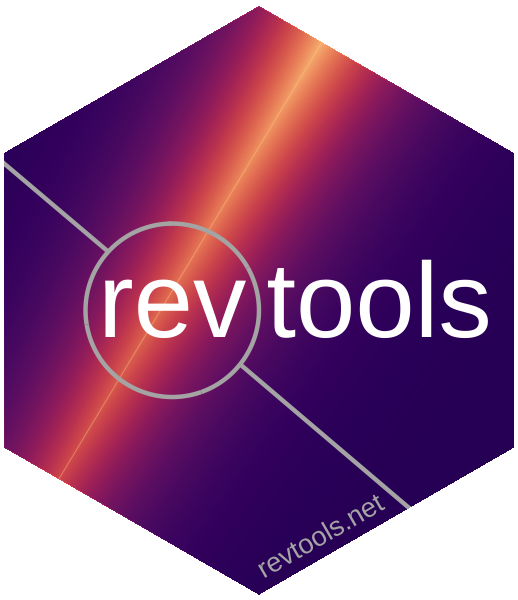

revtools v0.4.1
Tools to support literature review and evidence synthesis in R, including import, de-duplication and interactive display of bibliographic data.
For a complete introduction to revtools you can check out the website; but to get started now you can download revtools either from this site (development version) or CRAN (stable version) as follows:
install.packages("revtools") # install from CRAN
devtools::install_github("mjwestgate/revtools") # install from GitHub
library(revtools) # loadOnce you’ve installed & loaded revtools, you can use any of the inbuilt apps by loading them and drag-and-dropping the data you want to analyse. All the apps export to csv format so you don’t need to use R to investigate their results if you’d prefer not to. The apps available in revtools are:
screen_duplicates() to investigate potential duplicates within a datasetscreen_titles() to screen articles by titlescreen_abstracts() to screen articles by abstractscreen_topics() to run topic models on bibliographic dataIf you’re a keen to investigate your data in the R workspace, revtools is designed to make data import as straightforward as possible. It does this by using a single function to import bibliographic data from bib, ris, ciw or csv formats:
file_location <- system.file("extdata",
"avian_ecology_bibliography.ris",
package = "revtools")
# to import bibliographic information into a data.frame
data <- read_bibliography(file_location)Then you can pass these data to your apps as you would with any other function:
screen_topics(data) # runs using your data
# you can save progress to the workspace by specifying an object:
result <- screen_topics(data)
# or save to a file within the app, and reload that saved file:
y <- readRDS("saved_object.rds")
screen_topics(y)